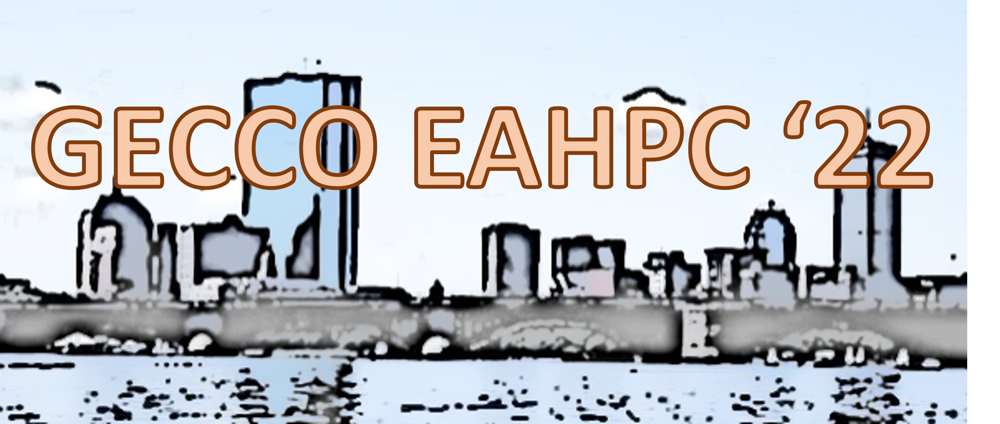

Nature-inspired computation—including evolutionary algorithms, swarm intelligence, neural and neuromorphic systems, and quantum-inspired optimization—has long been associated with parallelism and distributed search. As high-performance computing (HPC) platforms evolve toward extreme scale and heterogeneous architectures, these paradigms are increasingly positioned to exploit massive parallelism across CPUs, GPUs, accelerators, neuromorphic hardware, and emerging quantum devices.
While evolutionary algorithms have historically led this integration, similar scalability challenges and opportunities arise in swarm-based methods, ant colony optimization, particle swarm optimization, artificial immune systems, self-organizing systems, and bio-inspired neural approaches. Additionally, hybrid paradigms—such as quantum-inspired evolutionary algorithms, neuromorphic acceleration of population-based search, and agent-based swarm systems operating at metropolitan or planetary scale—introduce new algorithmic and systems-level questions.
Deploying nature-inspired algorithms on modern HPC platforms introduces a secondary objective beyond solution quality: efficient and responsible use of computational resources. Researchers must navigate trade-offs among synchronization models, communication overhead, heterogeneous hardware utilization, memory hierarchies, accelerator-aware design, and energy efficiency. These challenges extend to workflow orchestration, containerization, reproducibility, and benchmarking across diverse computing substrates.
This workshop aims to bring together researchers working at the intersection of nature-inspired computation and large-scale computing systems. We welcome contributions spanning evolutionary computation, swarm intelligence, neuromorphic computing, quantum and quantum-inspired optimization, bio-inspired multi-agent systems, and hybrid paradigms. The goal is to foster dialogue on scalable algorithm design, performance modeling, benchmarking, and practical deployment experiences on leadership-class and emerging architectures. By bridging algorithm designers, application scientists, and systems researchers, the workshop seeks to advance principled and efficient large-scale nature-inspired computation.
We are looking for papers on the following sub-topics to facilitate discussion:
The workshop is intended for researchers and practitioners working at the intersection of nature-inspired computation and large-scale computing systems, including:
Please note that the dates are subject to change.
| Submission opening | February 11, 2022 | |
| Submission deadline | April 11, 2022 | |
| Notification of paper acceptance | April 25, 2022 | |
| Camera-ready submission of accepted papers | May 2, 2022 | |
| Workshop | TBD | |
| Author registration deadline | May 2, 2022 |
The 2nd Workshop on Evolutionary Algorithms in HPC will be part of the 2022 Genetic Algorithms and Evolutionary Computation Conference (GECCO 2022) in Boston, Massachusetts, USA. The workshop will be held as a 110 minute virtual session event during the conference.